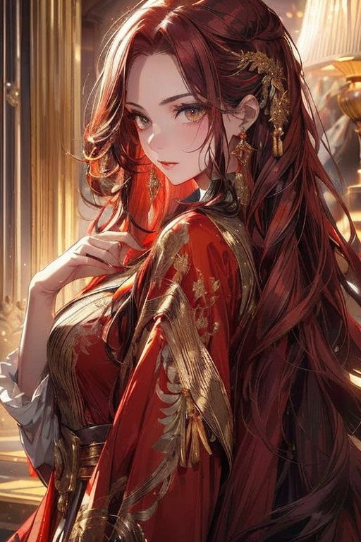

Titles
- Guide of Fate
- Authority Holder of Destiny
- Allseeker
- Path Builder
- The Weaver
- She who ends Hope
- Wish Granter
- Impetus of Divinity
- Puppeteer of Gods
- World's End
- Weapon Master
- Direct Creation of Deus
- Transcendent
Anastasia can be considered the prototype for the Silver Guardians, among the Absolute Transcendents from linear time, she is the third to be "recreated" by Deus. Her latent potential was immense, as was her combat power. She served directly under Deus and in terms of status, was above the Silver Guardians before they became Absolute Transcendents.
When Deus obtained Transcendence, allowing his creations the opportunity for Absolute Transcendence, Anastasia forcefully grasped the Authority of Destiny from the Heavenly Demon, who opted to take the Authority of Karma and Authority of Causality instead.
As the ultimate decider of fate and destiny, she is also known to destroy the hopes of many, yet as the same time, she is the one who crafted the paths many walk.
The Guide of Fate resides most of the time in her own world, weaving away.
(AI generated concept art)
